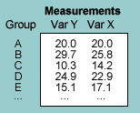
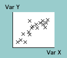
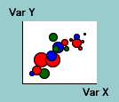

We now consider a different type of data in which two different measurements are made from each of several groups. These groups are often different geographical regions. The measurements are called 'variables' and can be of dissimilar types (e.g. GDP and birth rate).
Scatterplots
A data set of this form is often displayed in a scatterplot. A scatterplot shows:
Showing size
When the pairs of measurement are from different geographical regions (e.g. countries), these regions often differ greatly in size. The crosses in a scatterplot can be replaced by coloured circles whose areas are proportional to their sizes (e.g. population or GDP). Circle colour can represent continents or other groupings of the regions.
Nonlinear scales (advanced)
Some variables consist of many small measurements and a few much larger ones. The larger values can dominate a scatterplot, so a logarithmic scale is occasionally used to distinguish the smaller values. However a nonlinear scale should only be used in publications targetted at a more numerate audience.